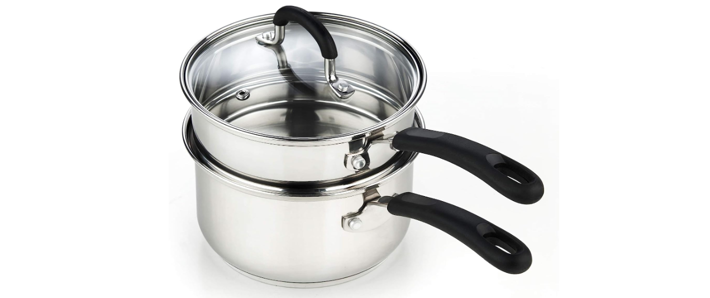
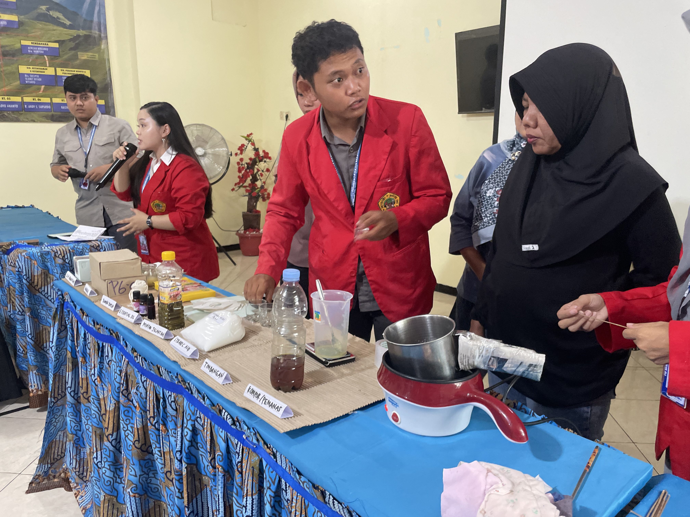
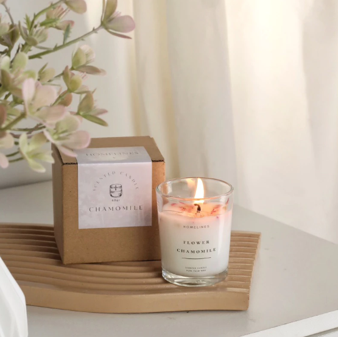

.png)

1 PENDAHULUAN: BANK MINYAK JELANTAH & FILTRASI
Minyak sisa penggorengan (jelantah) seringkali menjadi limbah yang mencemari lingkungan. Melalui program ini, minyak jelantah dikumpulkan dan difiltrasi untuk dimanfaatkan kembali (upcycling). Langkah ini tidak hanya mengurangi pencemaran, tetapi juga memberikan bahan baku utama secara gratis untuk pembuatan produk bernilai jual tinggi.
Proses Filtrasi Tangki (Kapasitas 100L):
Penyaringan menggunakan tabung khusus berbahan Steel (Diameter 400 mm, Tinggi 600 mm). Tabung ini memiliki desain filter bertingkat:
- Area penyaring atas yang bisa diangkat.
- Dudukan arang aktif khusus yang sangat efektif untuk menetralkan bau tidak sedap (bau tengik).
- Kran drain di bagian bawah untuk mengeluarkan minyak jelantah yang sudah jernih, bebas kotoran, dan siap olah.
.png)
2 PERSIAPAN ALAT & BAHAN
Sebelum memulai proses pembuatan, pastikan alat dan bahan berikut telah tersedia:

Alat:
- Panci dan Kompor Listrik.
- Digunakan untuk metode pemanasan Double Boiling (melelehkan bahan dengan uap air panas, tanpa kontak api langsung).
Wadah & Pelengkap:
- Gelas Sloki Mini Kaca berukuran 60ml.
- Sumbu Katun (dibutuhkan ±10 cm per lilin).

Bahan Padat & Cair:
- Minyak Jelantah Terfilter: Bahan baku utama.
- Stearic Acid (Asam Stearat): Berfungsi sebagai agen pengeras agar minyak jelantah dapat memadat dan sumbu menyala stabil.
- Essential Oil / Bibit Parfum: Sebagai pewangi aromaterapi.
- Pewarna: (Opsional).
3 RASIO FORMULASI LILIN
Gelas sloki berkapasitas 60ml hanya akan diisi adonan sebanyak 55ml. Hal ini bertujuan agar permukaan lilin menjorok ke dalam sehingga lebih aman saat dinyalakan.
Berikut adalah rasio untuk 1 buah lilin (55ml):
- Minyak Jelantah (~45%): ± 25 ml
- Stearic Acid (~42%): 23 gram
- Essential Oil (~13%): 10 ml (sekitar 2-3 sdt)
4 TATA CARA PEMBUATAN (SOP)
Ikuti langkah-langkah berikut dengan seksama:
Persiapan Wadah:
Pasang sumbu katun (±10 cm) di bagian tengah gelas sloki kaca. Gunakan penyangga agar sumbu tetap tegak lurus.
Pemanasan Double Boiling:
Siapkan panci berisi air di atas kompor listrik. Letakkan wadah tahan panas di atas air tersebut.
Pelelehan Bahan:
Masukkan 23 gram Stearic Acid ke dalam wadah pemanas. Tunggu hingga mencair sempurna.
Pencampuran Minyak:
Setelah asam stearat mencair, tuangkan 25 ml Minyak Jelantah yang sudah terfilter. Aduk perlahan hingga semua bahan tercampur rata (homogen).
Penambahan Aroma (Krusial):
Matikan kompor. Tunggu hingga suhu adonan sedikit turun (hangat). Setelah itu, tambahkan 10 ml Essential Oil.
(Catatan: Fragrance oil harus ditambahkan terakhir saat suhu turun agar aroma tidak cepat menguap terbawa uap panas).
Pencetakan:
Tuangkan adonan yang sudah wangi ke dalam gelas sloki yang telah disiapkan. Biarkan di suhu ruang hingga lilin memadat sempurna.
5 PENGEMASAN, BRANDING & TARGET PASAR
Lilin aromaterapi adalah kombinasi estetika dan fungsi terapeutik. Agar produk olahan limbah ini memiliki nilai ekonomis tinggi, estetika kemasan sangatlah penting:
- Desain Stiker Eksklusif: Cetak logo bisnis dan label varian aroma (misal: Lime Basil & Mandarin) pada kertas stiker, lalu tempelkan pada bodi jar/sloki kaca.
- Pengemasan Menarik: Gunakan kotak kemasan transparan (seperti mika/packaging cupcake) untuk membalut lilin agar terlihat elegan dan siap dipasarkan.
Target Pasar Premium:
Industri perhotelan (hotel berbintang) dan restoran yang membutuhkan suasana (ambience) rileks dan mewah, Corporate Hampers, serta Souvenir Pernikahan berkonsep Eco-Friendly & Sustainability.

6 ANALISIS BIAYA & PROYEKSI KEUNTUNGAN
Mengubah minyak jelantah menjadi lilin aromaterapi memberikan lompatan nilai jual yang masif dibandingkan hanya menjualnya ke pengepul (Rp 10.000/liter).
Rincian Harga Pokok Penjualan (HPP) per Produk (Lilin 55ml):
| No | Bahan Dasar / Material | Kebutuhan | Biaya HPP (Rp) |
|---|---|---|---|
| 1 | Minyak Jelantah (Terfilter) | ± 23 ml | 0 (Limbah) |
| 2 | Stearic Acid | 25 gram | 1.000 |
| 3 | Essential Oil | 4-5 tetes / 10ml | 500 |
| 4 | Sumbu Katun | 10 cm | 185 |
| 5 | Gelas Sloki Kaca (60ml) | 1 pcs | 2.200 |
| 6 | Box Transparan | 1 pcs | 1.200 |
| 7 | Sticker Label Brand | 1 lembar kecil | 500 |
| Total Modal Baku (HPP) per Produk: | Rp 5.585 | ||
Proyeksi Profitabilitas:
Dengan Harga Pokok Penjualan (HPP) yang sangat rendah (Rp 5.585 / pcs)—yang mana sudah mencakup biaya penuh untuk kemasan estetik—nilai jual produk ini menjadi sangat kompetitif.
Jika produk dijual dengan harga wajar untuk souvenir eco-friendly di kisaran Rp 15.000 hingga Rp 25.000, Anda akan mendapatkan margin keuntungan bersih lebih dari 100%.
"Semoga modul ini bermanfaat dan dapat langsung diaplikasikan di rumah. Jadikan kreativitas hari ini sebagai pembuka pintu peluang usaha di masa depan. Semangat berinovasi dan semoga sukses!"
DARI LIMBAH MENJADI BERKAH